Formula sheet
76 formulas, each with its symbols and the lesson that explains it.
Distances and light
Small-angle distance from parallax
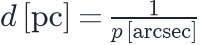
 distance,
distance,  parallax angle measured over half a year
parallax angle measured over half a year
Inverse-square law
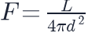
observed flux, luminosity,  distance
distance
Distance modulus
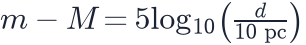
 apparent magnitude,
apparent magnitude,  absolute magnitude
absolute magnitude
Redshift
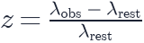
 wavelength
wavelength
Relativistic Doppler shift
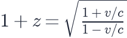
line-of-sight velocity
Wien displacement law
 temperature of a blackbody
temperature of a blackbody
Stefan–Boltzmann law
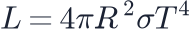
radius,  Stefan–Boltzmann constant
Stefan–Boltzmann constant
Expansion and redshift
Hubble–Lemaître law
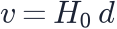
recession velocity,  proper distance,
proper distance,  Hubble constant
Hubble constant
Hubble parameter
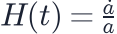
 scale factor
scale factor
Redshift and the scale factor
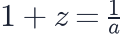
 scale factor when the light was emitted
scale factor when the light was emitted
Proper and comoving distance
 comoving distance, fixed for objects carried by the expansion
comoving distance, fixed for objects carried by the expansion
Hubble radius and Hubble time
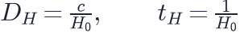
Mpc, billion years
Cooling by expansion
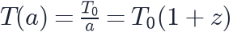
 K, the CMB temperature today
K, the CMB temperature today
Friedmann equations
First Friedmann equation
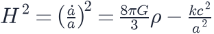
 total energy density over
total energy density over
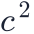
,Acceleration equation
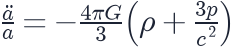
 pressure
pressure
Fluid (continuity) equation
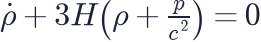
 density,
density,  pressure
pressure
Critical density
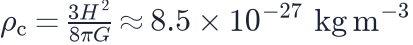
about five hydrogen atoms per cubic metre today
Density parameters
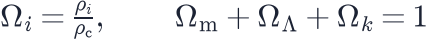
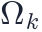
is the curvature term, zero in a flat universeHow each ingredient dilutes
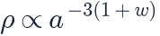
matter  , radiation
, radiation  , cosmological constant
, cosmological constant 
Expansion rate of a ΛCDM universe
the master equation of the Cosmology Calculator
Evolving dark energy (CPL)
today, its rate of change
Age of the universe
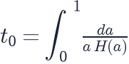
about 13.8 billion years for Planck 2018
Distances in cosmology
Comoving distance
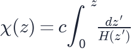
the distance to an object today, expansion factored out
Luminosity and angular-diameter distance
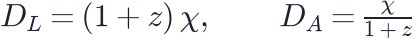
 from brightness, from apparent size
from brightness, from apparent size
Lookback time
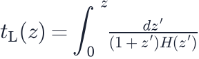
how long the light has been travelling
Particle horizon
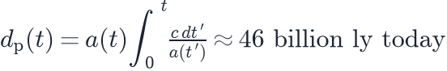
the edge of the observable universe
Event horizon
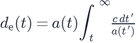
finite when dark energy dominates
Thermal history
Time and temperature in the radiation era
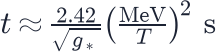
relativistic degrees of freedom
Energy density of radiation
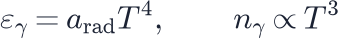
radiation constant
Neutron-to-proton ratio at freeze-out
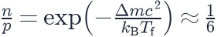
MeV,
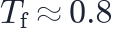
MeVPrimordial helium fraction
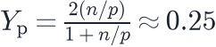
nearly all surviving neutrons end up in helium-4
Baryon-to-photon ratio
about one baryon per 1.6 billion photons
Recombination (Saha equation)
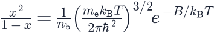
ionised fraction, eV
Neutrino background temperature
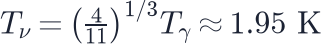
the relic neutrinos are colder than the CMB
Density of massive relic neutrinos
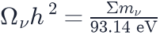
the sum of the three neutrino masses
Saha equation for hydrogen
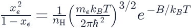
the ionised fraction, the hydrogen density, eV
21-cm brightness temperature
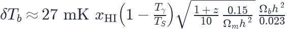
 the neutral fraction,
the neutral fraction,  the spin temperature,
the spin temperature,
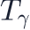
the radio backgroundStructure and the CMB
Jeans length
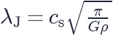
sound speed
Growth of density contrast
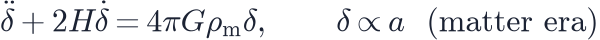
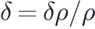
Matter power spectrum
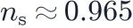
,Sound horizon and the acoustic scale
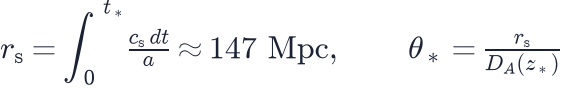
at recombination
Position of the CMB peaks
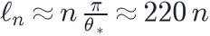
multipole moment
Clumpiness parameters
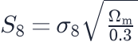
 density contrast in spheres of 8 Mpc/h
density contrast in spheres of 8 Mpc/h
Einstein radius
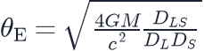
 , , observer–lens, observer–source and lens–source distances
, , observer–lens, observer–source and lens–source distances
Small-scale suppression by neutrino mass
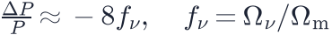
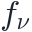
the neutrino share of the matterVirial temperature of a halo
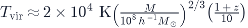
 the halo mass,
the halo mass,  the redshift at which it forms
the redshift at which it forms
Halo mass function
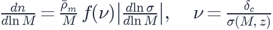
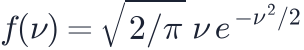
for Press–Schechter,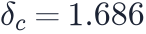
Size of a galaxy disc
 the halo spin parameter, the virial radius
the halo spin parameter, the virial radius
Dark matter and dark energy
Circular velocity and enclosed mass
mass inside radius 
Virial theorem for clusters
velocity dispersion
MOND acceleration scale
the baryonic Tully–Fisher relation
Deceleration parameter
negative means the expansion is speeding up
The cosmological constant problem
quantum field theory vs the measured dark energy density
Angular size of a black hole shadow
 the Schwarzschild radius,
the Schwarzschild radius,  the distance
the distance
Hawking temperature
 the mass of the black hole
the mass of the black hole
Time until a Big Rip
 the equation of state of phantom energy
the equation of state of phantom energy
Lifetime of an evaporating black hole
 the mass of the black hole
the mass of the black hole
Relic abundance of a thermal WIMP
the thermally averaged annihilation rate
Largest nuclear recoil energy
the WIMP mass, the nucleus mass, the WIMP speed
Frequency of an axion converted to a photon
the axion mass
Inflation and the early universe
Slow-roll parameters
 inflaton potential, reduced Planck mass
inflaton potential, reduced Planck mass
Inflation's observable predictions
measured,
Number of e-folds
each e-fold multiplies every distance by
Schwarzschild radius
3 km for the Sun, 9 mm for the Earth
Planck scale
where quantum gravity takes over
Gravitational-wave chirp mass
the combination that sets how fast a binary chirps
Energy scale of inflation from r
 the tensor-to-scalar ratio, measured from B modes at
the tensor-to-scalar ratio, measured from B modes at
Measurement and statistics
Combining independent measurements
the likelihoods multiply, so the χ² values add
Effective sample size of a chain
 steps, autocorrelation length
steps, autocorrelation length
Independent errors in quadrature
fractional errors of the three rungs of the distance ladder
Effective volume of a galaxy survey
 galaxy density,
galaxy density,  clustering power at the BAO scale
clustering power at the BAO scale
Statistical and systematic errors
the error of one object,  objects
objects
Covariance matrix from mock catalogues
the measurement in bin from mock  ,
,  the number of mocks
the number of mocks
Redshift space
 true comoving distance, line-of-sight peculiar velocity
true comoving distance, line-of-sight peculiar velocity
Strain of an inspiralling binary
the chirp mass,  the wave frequency,
the wave frequency,  the luminosity distance
the luminosity distance
Expansion and geometry
Hubble time and Hubble distance
km/s/Mpc